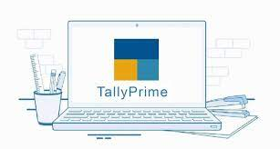

ADCA course is a specialized program that is designed to provide students with comprehensive knowledge and
practical skills in computer applications. The course covers a wide range of topics, including computer
programming, DCA, DTP, Tally , software development, database management, web design, and more.
DCA

DCA, Diploma in Computer Applications, is a 6-month
diploma course in the field of
Computer
Applications which involves study of numerous computer applications such as MS Office, Internet Applications,
Operating System, Database Management System (DBMS), HTML among other subjects.
The course curriculum ensures to provide an aspirant a
deeper knowledge of the subject as well as will make the student technology-friendly.
TALLY

The recognition program gives you the learning of essential accounting ideas and standards. Tally ERP9 is a
critical apparatus that can be utilized to create accounting and stock experts, vouchers and reports. This course
helps in understanding the significance and utilization of job arrange preparing and job costing
DTP

The DTP operator takes care of aspects such as typography, layout of the document (form) and printing the
document. DTP is not just limited to editing, creating and printing documents. It also involves printing things
such as banners, business cards, circulars, notices, sign-boards, packaging materials etc.